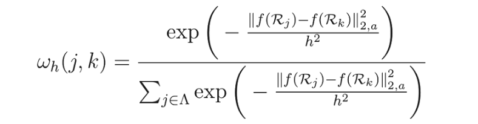
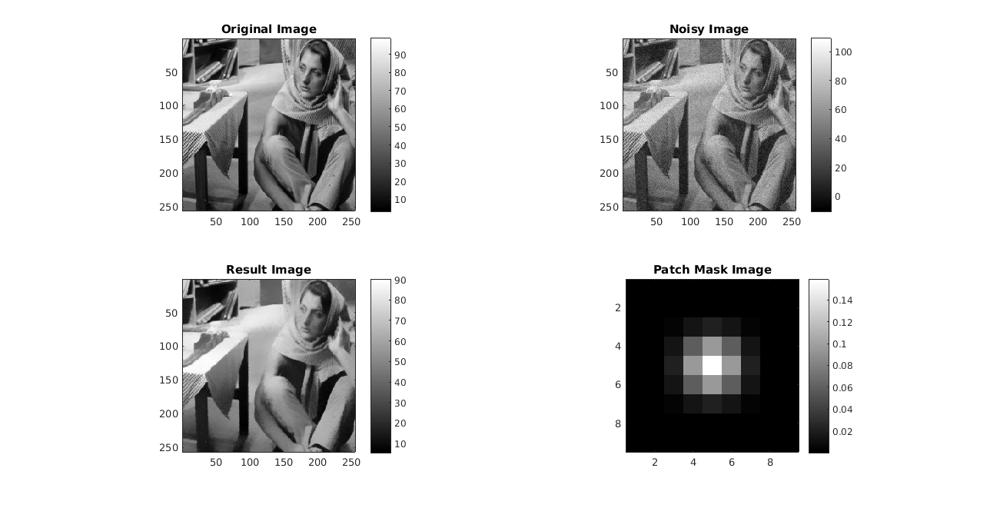

MyMainScript
Contents
Q3. Edge-preserving Smoothing using Patch-Based Filtering.
Initially gaussian noise of 5% is added to the original Image . The Edge-preserving Smoothing is performed using a given window size and Patch Size , Here a window is drawn around a given pixel , now for each pixel in the window we need to compute the weight of that pixel . To calcuate the weight of a given pixel we use the similiary of the patch around that pixel and our center pixel . If the patch around two pixels are similar then the window pixel is given a higer weight else its given a lower weight .
Weight(j,P) Proportional to Similarity of (j , P)
To calculte weight of each pixel on the window the given formula is used.

Handling Boundary Pixels
To handle Boundary pixels for Patch and Windows , the initial image is padded (window_size-1)/2 +(patch_size-1)/2 on every side.
Now to Calculate the Similary of two patch vectors the euclidean distance of the intinsities is used .
Now to make the Patches Iso morphic the patches are multiplied to a gaussian mask . of std deviation sigma_patch .
Optimal value of Sigma of Gaussian of Weight : .5 Optimal Value of Sigma of Gaussian Mask : 1
tic; im=load('../data/barbara.mat'); im=im.imageOrig; imr=imresize(im,.5); res=myPatchBasedFiltering(imr,25,9,.5,1); imwrite(mat2gray(res),'../images/barbara_full.png'); toc;
RMSD SCORE
8.0434
Elapsed time is 469.322240 seconds.
